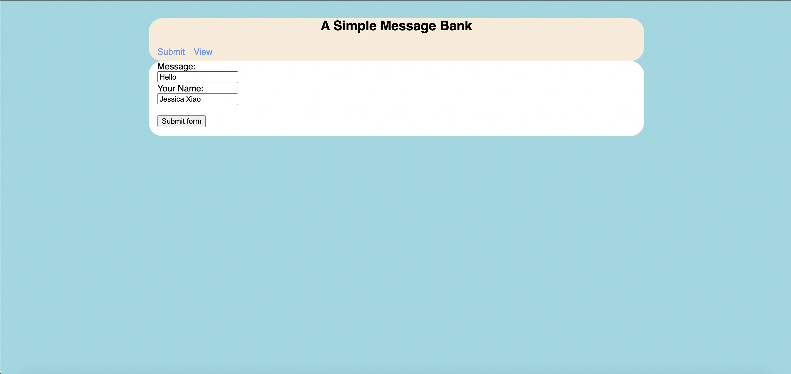
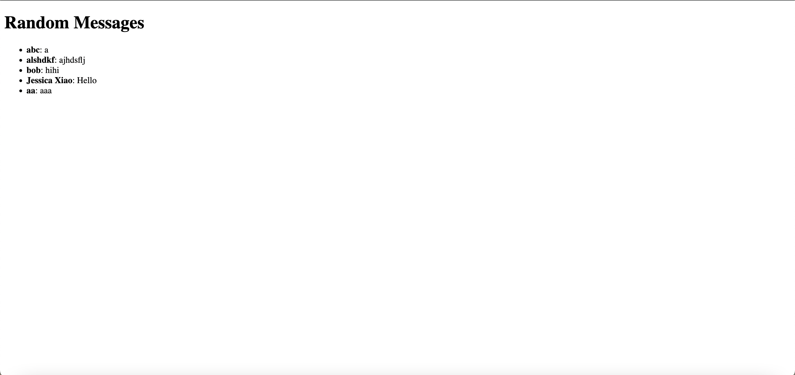

HW3: Creating a Simple Message Bank with Flask
Write the app.py file
First, let’s import the necessary libraries.
from flask import Flask, g, render_template, request
import sklearn as sk
import matplotlib.pyplot as plt
import numpy as np
import pickle
import os
from matplotlib.backends.backend_agg import FigureCanvasAgg as FigureCanvas
from matplotlib.figure import Figure
import io
import base64
import sqlite3
import sys
app = Flask(__name__)Next, let’s define the get_message_db() function.
def get_message_db():
try:
return g.message_db
except:
g.message_db = sqlite3.connect("messages_db.sqlite")
cmd = '''
CREATE TABLE IF NOT EXISTS messages (
id INTEGER PRIMARY KEY,
handle TEXT,
message TEXT
)
'''
cursor = g.message_db.cursor()
cursor.execute(cmd)
return g.message_dbThe purpose of this is to ensure that there is a connection to a SQLite database where messages can be stored. It either returns an existing connection stored in the Flask global object (g.message_db) or creates a new connection if one does not exist. After creating a new connection, the function executes a SQL command to create a table named messages if it doesn’t already exist. The table has three columns: id, handle, and message.
The next function is the insert_message() function.
def insert_message(request):
message = request.form["message"]
handle = request.form["handle"]
conn = get_message_db()
cursor = conn.cursor()
cursor.execute("INSERT INTO messages (handle, message) VALUES (?, ?)", (handle, message))
conn.commit()
cursor.close()
return message, handleThis function takes in a request object and returns the message and handle that were inserted into the database. The overall purpose of this function is to insert messages into the database.
Next, we can define the random_messages() function.
def random_messages(n):
conn = get_message_db()
cursor = conn.cursor()
cursor.execute("SELECT handle, message FROM messages ORDER BY RANDOM() LIMIT ?", (n,))
messages = cursor.fetchall()
cursor.close()
return messagesThis function takes an integer n as its argument, indicating the number of random messages to retrieve from the database. After obtaining the connection, the function creates a cursor object to execute SQL commands. This function is useful for displaying random messages to users.
The last function we define is the render_submit_template().
def render_submit_template():
if request.method == 'GET':
return render_template('submit.html')
elif request.method == 'POST':
message, handle = insert_message(request)
return render_template('submit.html')The purpose of this function is to handle rendering of the submit.html template for both initial GET requests (to serve the form) and POST requests (after form submission). If the request method is ‘POST’, insert_message(request) is called.
Finally, let’s define our app routes.
@app.route('/')
def home():
return render_template('base.html')
@app.route('/submit/', methods=['POST', 'GET'])
def submit():
return render_submit_template()
@app.route('/view/')
def view():
messages = random_messages(5) # Get 5 random messages
return render_template('view.html', messages=messages)
if __name__ == "__main__":
app.run(debug=True, host="0.0.0.0", port=int(os.environ.get("PORT", 8080)))Explanation of base.html
submit.html is one of the template files used in the app.
{% extends "base.html" %}
{% block content %}
<form method="post" enctype="multipart/form-data">
<label for="message">Message:</label><br>
<input type="text" id="message" name="message"><br>
<label for="name">Your Name:</label><br>
<input type="text" id="handle" name="handle"><br><br>
<input type="submit" value="Submit form">
</form>
{% endblock %}The first line indicates that this template extends another template named base.html and inherits the structure and layout. The content block creates fields from user input, and defines an HTML form with fields for a message and the user’s name.
Examples of user submissions
This screencap shows an example of a user submitting a message. In this case, the message is “Hello” while the handle is “Jessica Xiao”. 
This screencap shows an example of a user viewing submitted messages. When the user clicks “view”, they will be able to view 5 randomly generated messages from the database. 